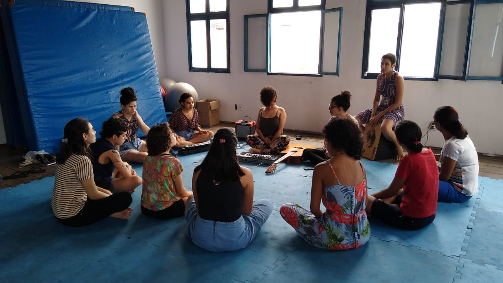
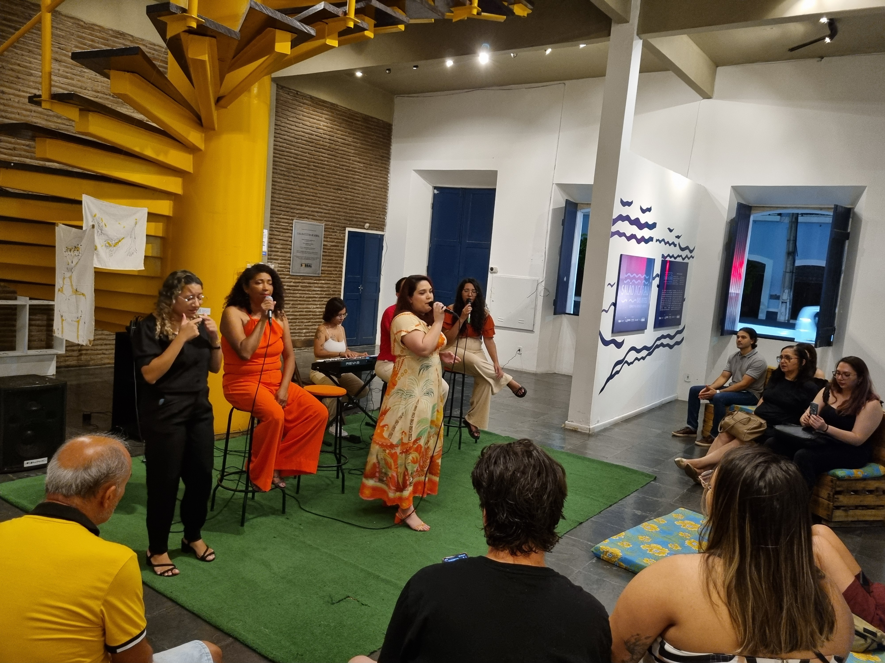

A primeira turma do CantaMina começou a partir de uma simples enquete no Instagram: “Se eu abrisse
uma
turma
de
canto para mulheres, você teria interesse?” O retorno foi surpreendente. Em pouco tempo, formou-se a
primeira
turma com 10 alunas pagantes, em uma sala cedida pela ECOA, em Sobral. Para garantir acessibilidade,
foram
oferecidas três bolsas gratuitas para integrantes do coletivo Slam das Cumadis, uma das quais segue
na
música
até hoje, realizando seus próprios shows.

A partir da troca entre alunas e professoras, o projeto
se
transformou em um espaço de autonomia e experimentação artística, incentivando a composição de
músicas
autorais,
gravação de álbuns e clipes e apresentações ao vivo. Com o crescimento do projeto, outras
professoras
passaram
pela
equipe, como Letícia Muniz, Quésia Carvalho, Adelane Delmondes e, mais recentemente, Juliana Cunha, que atualmente
conduz a
turma
presencial em Sobral e Eli Ponte, que acompanha a turma remota, enquanto Jéssica segue viajando pelo
mundo e coordenando o projeto e
preparando vocalmente as alunas que fazem shows e gravações.
A trajetória de Jéssica na música sempre esteve ligada ao protagonismo feminino. Desde sua
participação
no
grupo
vocal Caboclas, onde explorou sua história e de outras mulheres através da música e da cena, até
suas
experiências
como
frontgirl na banda Colorida e em projetos como Manas, Bloco Siri Rica e Lizi de Alta. O ponto de
virada
veio
com
o espetáculo Atemporal, onde, ao compartilhar relatos pessoais de violência e resistência, viu de
perto
o
impacto transformador da arte na vida das mulheres.
Hoje, o CantaMina segue expandindo suas fronteiras. Além da turma presencial em Sobral, o projeto
também
funciona de forma remota, com aulas individuais e coletivas. O projeto já participou de diversos
festivais,
como Festa do Sol , Festival Quarentena , Festival Muriçoca e Pluga e Pensa , sempre propondo
formação artística e apresentações
musicais.
Outra
iniciativa
fundamental é o CantaMina Convida, espaço dedicado a trocas inspiradoras com mulheres convidadas,
como
Mona
Gadelha e Simone Sousa. Bem como a Noite Canta Mina, momento em que as estudantes que desejarem
sobem ao palco para compartilharem seu desenvolvimento no canto, proporcionando uma experiência
imersiva e transformadora.

Mais do que um curso de canto, o CantaMina se tornou um espaço vivo e aberto a proposições, onde
professoras
e
alunas decidem juntas os temas a serem estudados, e as participantes têm total autonomia para propor
apresentações e projetos musicais. O projeto, que começou a partir de uma fagulha em uma rede
social,
hoje se firma como um movimento de mulheres que descobrem, juntas, a força e a potência de suas
próprias
vozes.
.jpg)
.jpg)
.jpg)
.jpg)
.jpg)


.JPG)